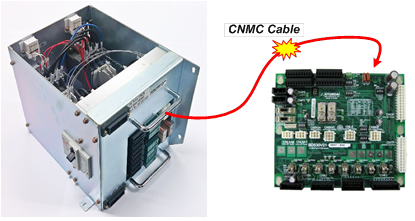
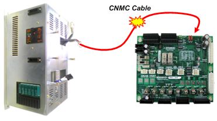
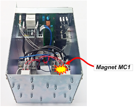
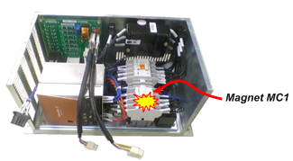
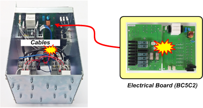
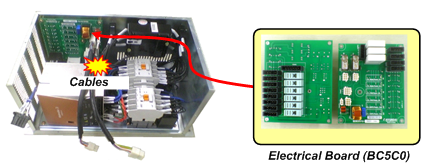

기존 에러코드: E0127 MSHP 동작 이상
1.1.34.1. 개요
서보 ON시도중에 마그네트 (전자접촉기, magnetic contactor) MC1이 동작하지 않았습니다.
1.1.34.2. 원인 및 점검방법
|
(1) 모니터링 계통을 점검하십시오. (2) 마그네트 MC1을 점검하십시오. (3) 전장보드를 점검하십시오. (4) 시스템보드를 점검하십시오. |
(1) 모니터링 계통을 점검하십시오.
전자접촉기가 설치되어 있는 전장모듈(PSM or PDM)과 모니터링 신호를 수집하는 시스템보드 간의 케이블링을 확인합니다. 케이블 이름은 CNMC이며 시스템보드 상단 뒷면을 통하여 전장모듈로 들어 갑니다. 이 케이블의 커넥터 접속상태를 점검하십시오.

(a) Hi5a-S 제어기

(b) Hi5a-N 제어기
그림 1.134 전장모듈의 CNMC 케이블
(2) 마그네트 MC1을 점검하십시오.
전장모듈 내부에 있는 마그네트 MC1이 정상적으로 동작하는지 점검하십시오.

(a) Hi5a-S 제어기

(b) Hi5a-N 제어기
그림 1.135 전장모듈 내부에 설치된 마그네트 MC1
(3) 전장보드를 점검하십시오.
시스템보드와 마그네트를 중계하는 전장보드, 케이블배선에 문제가 있을 수 있으므로 점검 또는 교체하십시오.

(a) Hi5a-S 제어기

(b) Hi5a-N 제어기
그림 1.136 전장모듈 내부에 설치된 전장보드
(4)시스템보드를 점검하십시오.
모니터링 계통, 마그네트, 전장보드에 문제가 없을 경우에는 시스템보드를 교체하십시오.